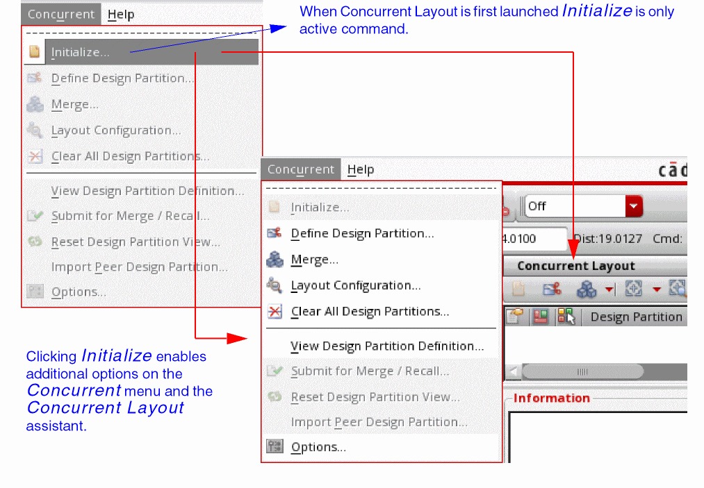

1
Getting Started with Virtuoso Concurrent Layout
Virtuoso® Concurrent Layout (CLE with E for editing) is a layout editing environment that enables designers to work concurrently on the same cellview within Virtuoso. This helps them in parallelizing their efforts, and, in turn, increases the productivity of the layout design team. You can perform concurrent editing in Layout XL and Layout EXL.
This section covers the following topics:
- Concurrent Layout Terminology
- Benefits of Using Concurrent Layout
- Concurrent Layout Flow
- Limitations
- Accessing Concurrent Layout
Concurrent Layout Terminology
Listed below are some important Concurrent Layout terms you need to know before you start using the software:
This is the initial layout cellview to be concurrently edited after initialization. After opening in memory it is called the top design.
A design partition divides the design responsibilities among designers. You can create as many partitions as needed in a design and new design partitions can be created at any time.
The different types of design partitions are the following:
- Area-based design partition Defines one or more areas for a designer to edit within.
- Net-based design partition Defines a net set for a designer to edit only those objects that have allowed or no connectivity.
- Object-based design partition Defines the object ownership for a designer to edit. The person who created the object also owns it.
- Free design partition Allows the user to work on any object, net, and any part of the design.
The on-disk layout cellview that stores incremental edits to the top design separately. These updates can be reapplied to the same top design later.
Defines the design partition for each designer and merges the respective design partition views back to the top design.
A user who edits in the assigned design partition.
A designer working on another design partition of the same top design concurrently. Updates made by the peer designer are saved to a different design partition view.
Benefits of Using Concurrent Layout
Some of the top benefits on using Concurrent Layout are the following:
- Boosts layout productivity by enabling several designers to work concurrently on the same cellview. Typical examples are DRC fixing, chip finishing, and critical nets manual routing.
- Saves the design partition view containing only the updated part of the design, which is quite small in comparison to the initial cellview. This reduces the disk access time. In the design management environment, this saves vault storage space and reduces the network traffic to improve the network responsiveness.
- Enables the design manager to review a partition view and merge or reject it. The user can generate several results for what-if analysis and picks the best combination in the end.
- Supports off-line concurrent editing because the client/server model can suffer synchronization bottleneck over the network.
- Provides Incremental Edit In Place to complement the traditional hierarchical design by postponing an update in the sub-hierarchy until it is verified in all the designs referencing it.
Concurrent Layout Flow
The default Virtuoso Layout flow is sequential in which each task is carried out after the previous task is complete. However, in the CLE environment, you can create multiple partitions in the design and have designers work in parallel, which helps save time. The basic Concurrent Layout flow, involves the following tasks:
The following flow chart shows the difference between the default Virtuoso Layout flow and the Concurrent Layout flow.
Limitations
Listed below are some tasks that are currently not supported in Concurrent Layout editing:
- Constraint editing. For example, you cannot edit MODGENs in Concurrent Layout.
- Editing an object created in an imported peer partition. Edits made to this object are not saved. You can only concurrently edit an object existing in the top design.
When a limitation is detected, Concurrent Layout displays an alert glyph on the canvas and an Edit Loss error in the Alerts section of the Concurrent Layout assistant. You will be asked to undo the changes because saving them can result in a partially saved design, where the unsupported changes will be lost.
In case of constraint editing, if you proceed with saving the design, Concurrent Layout may create a marker to record the incident and inform the design manager that an unsupported edit was not undone by the designer before save.
You might see other kinds of alerts, such as edit conflicts that can result in merge issues. For example, a complex object, such as an MPP being edited in two design partitions can cause edit conflicts. Such issues can be avoided by carefully creating the design partitions and are not considered a limitation.
Accessing Concurrent Layout
You can access Concurrent Layout in Layout XL and Layout EXL either from the Concurrent menu in the menu bar or using the Concurrent Layout workspace:
-
Concurrent menu
The Concurrent menu provides flow-related commands for Concurrent Layout.
To get the design ready for concurrent editing, click the Initialize command on the Concurrent menu. This displays additional commands in the Concurrent menu and also embeds the Concurrent Layout assistant as a docked assistant pane within the current session window.
The commands that are enabled in the Concurrent menu depend on the mode in which the design is open. These modes are the following:- Manager mode Lets you perform various managerial tasks, such as defining the design partition for each designer and merging the respective design partition views back to the top design.
- Designer mode Lets you edit the design in the assigned design partition view and then submit these changes for merging with the top design.
The manager mode and designer mode commands in the Concurrent menu are described below.
Displays the Define Design Partition form that lets you create and configure design partitions.
Displays the Merge form that lets you merge or reject design partition views that have been submitted to be merged with the top design.
Displays the Layout Configuration form that lets you load or unload layout configurations in design partition views.
Displays the Clear All Design Partitions form that lets you remove the existing design partition views from the top design so that the design can be edited without using Concurrent Layout.
Displays the View Design Partition form that lets you check design partition definitions.
Submits the updated design partition view for merge.
If you have submitted a design for merge, then you can use this command to recall the design and change the design status to Editing.
Clears all the edits in the design partition view. The status changes to either Created or Reset (if this design partition view was merged before). If the design partition status is Error, see the tooltips for the reason and you could fix it by resetting.
Displays the Import Peer Design Partition form that lets you import updates made by a peer designer in your Design Partition view.
Displays the Concurrent Layout Options form.
-
Concurrent Layout workspace
The workspace for Concurrent Layout is called Concurrent_Layout. To apply the Concurrent Layout workspace, do one of the following in the Layout XL or Layout EXL window:
Return to top